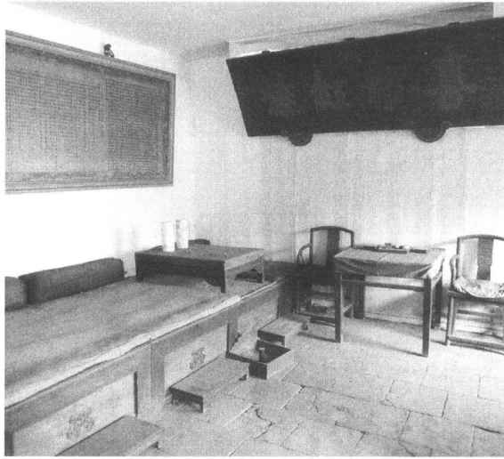
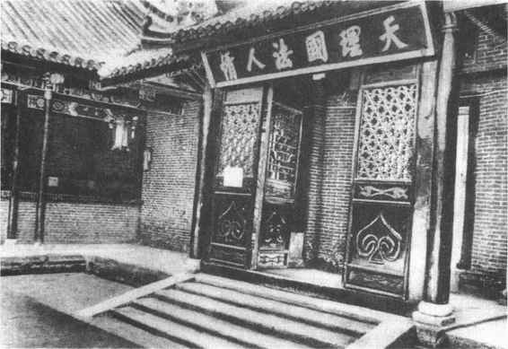
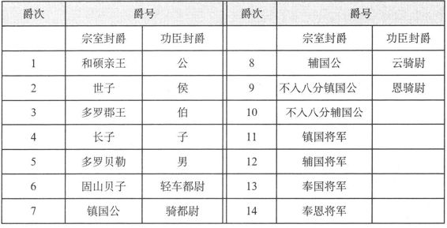
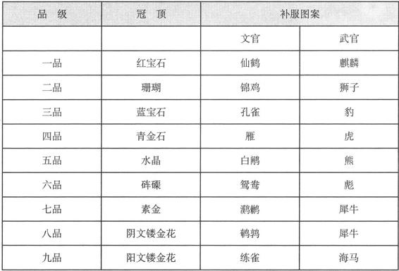
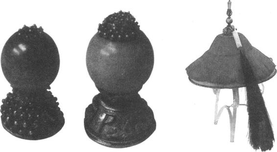

清统治者入关前，曾有“议政王大臣会议”，由八旗的诸王和总理旗务大臣组成，凡朝廷的军国大政，都要由它讨论和决策。这说明，议政王大臣会议是满洲贵族控制朝政、维护自己利益的特权机构，这必然同封建的中央集权和君主专制发生矛盾和冲突。所以清王朝统一中国后，封建皇帝便通过允许蒙、汉大臣参加议政和设立内阁等办法，逐步削弱议政王大臣会议的权力，并最终于乾隆五十六年（1792）明令正式予以裁撤。
清朝入关前，朝廷设有内三院，即内国史院、内秘书院、内弘文院，分掌记注皇帝起居、编立史册、撰写实录、草拟国书制敕及为皇帝进讲等。内三院设大学士、学士等，可参预国家机要。顺治十五年（1658），清朝改内三院为内阁，设大学士，加殿阁头衔，满汉各半。并且仿照明朝制度，规定凡各处官员上呈的奏章，先由内阁代拟批旨（替皇帝拟出几种处理意见），再进呈皇帝；对于皇帝的诏令，也由内阁下达六部等衙门执行。开始时，由于规定大学士仅为五品官，至使内阁的权势反而低于原内三院。但是由于清朝皇帝利用内阁抑制议政王大臣会议的权势，使内阁的地位不断得到提高。雍正时，内阁大学士的官位品级升为正一品，成为朝廷的最高级官员了。不过，自军机处成立后，取代了内阁的许多职权，内阁官员也只是处理一些例行公事了，这时的“大学士”也成了文臣的一种荣称。
南书房在乾清宫的南庑，原是康熙皇帝读书之处，后来又选召翰林等官入内当值，称为“南书房行走”。康熙皇帝在闲暇时，便由他们陪侍赋诗作画等，进而参预机务，秉承皇帝旨意，起草诏令，一度成为发布政令之所在。不过，南书房只在康熙帝时才具有这种特殊地位。
雍正七年（1729），正值清军在西北与准噶尔部作战，为了能及时处置军情，遂在内廷设军需房，直接转达前线军情及皇帝旨意，这样既可省去内阁的复杂手续，而且不易泄密。后又称军机房，雍正十年（1732）正式改称“办理军机处”，简称军机处，其职权也扩大为参预全部军国大政。由于军机处转达皇帝旨意、处置政务效率高，使得皇权专制达到最高峰，所以尽管它不是正式官署，却一直保留下来，并在清朝历史中发挥了重要作用。（图5—12）

图5-12 紫禁城军机处值房内景
军机处设军机大臣，称为“军机处行走”、“军机大臣上行走”，无定员，多者六七人，一般以特选的大学士、尚书、侍郎等官充任，清末也有亲王入选。领班的军机大臣叫做“首揆”。
军机大臣在军机处轮班值日，准备皇帝随时召见，商议军国大政。军机大臣也要根据皇帝意见拟定谕旨，发布到有关部门，叫做廷寄。当时，内阁发出的各种文件叫“明发”，相比之下，军机处的廷寄较明发具有勤、速、密的突出特点。
对于资历浅的军机大臣，授予“军机大臣上学习行走”，其地位稍低，班次在后。军机大臣的僚属称为军机章京，俗称小军机，主管军机处的日常文书工作、撰拟谕旨、文稿等。
清朝中央行政机构的设置和职掌，如六部、九卿、五寺、二监等，都和明朝一样，只是理藩院为清朝所特设。
理藩院，设尚书、侍郎为正副长官，专门掌管蒙古、西藏及新疆各地少数民族事务。此外，理藩院也分管部分外交、通商事务，如设俄罗斯馆等，直至咸丰时才把外交、通商等职掌划归总理各国事务衙门。
清朝的都察院同明朝一样，是全国最高监察机构。以左都御史、左副都御史为正、副长官。明朝作为独立的监察机构六科给事中，在清朝归并入都察院。
清朝把全国划分为15道监察区，都察院设15道监察御史分掌稽核各道的刑名案件等，并且有权稽查在京各衙门事务。
都察院还在京城设五城察院，分东、西、南、北、中五城，每城设一衙门，以巡城御史为长官，专查京城地方的机构和官员。
此外，清朝督察院还设有宗室御史处，专门稽查宗人府事务；设稽查内务府御史处，专门稽查内务府事务。
清朝的地方行政机构一般可分为省、府（州、厅）、县三级。
省一级的最高军政长官为总督、巡抚。总督和巡抚在明朝都是属于都察院的差遣职官，在清朝则成为正式的地方高级官员了。
总督一般管辖两省至三省，但四川总督就只管四川一省。总督例兼兵部尚书和都察院右都御史衔，这就使他掌握了数省的行政、军事、监察大权。总督又可称为“制军”、“制台”。
巡抚为一省的最高军政长官，例兼兵部侍郎、都察院右副都御史衔，这样便有权统管全省的行政、军事、监察等大权了。巡抚又可称为“抚军”、“抚台”。
督、抚之下设布政使，掌管一省的财赋、民政。布政使又可简称藩台、藩司。
又设按察使，掌管一省的司法、监察以及驿传事务。按察使又可简称臬台、臬司。
清代对于督抚、布政使、按察使，可合称三大宪。
清初，布政使下设左右参政、参议，驻守在某一地方，称为守道；又按察使下设副使、佥事等，可去分巡某一地方，称为巡道。乾隆时裁撤上述参政、副使等官，专设分守道、分巡道，带兵备衔，管辖府州，成为省和府州之间一级机构，叫做道员。在名义上，道应是省的派出行政机构。清朝还设立一些专业道员，如负责河务的，负责盐、茶、粮的等。
省下设府，以知府为行政长官，掌管一府的政务及所属州、县的赋役、诉讼等事。此外，顺天府和奉天府，分别是京城和陪都，地位较一般府要高，设府尹为其长官。
还有与府同级的直隶州，直属于省，以知州为其长官。有属县。又在少数民族地区设立有直隶厅，直属于省，以同知、通判为长官。府下设县和散州。县是地方行政的基层组织，长官为知县。（图5—13）散州多是因地而特设的，也以知州为其长官。

图5-13 河南内乡县衙
清朝后期，西方帝国主义闯进了中国的大门，他们借口通商，一步步侵夺中国的主权。这时一些人想通过变法维新达到富国强兵的目的。新的形势迫使清政府对封建的职官制度不得不做某些调整。政府部门有增有减，有的改名。但是已经丝毫不能挽回整个封建制度的垂死命运了。
清朝的封爵分为王爵与世爵两套。王爵也称为显爵，是封给满族宗室的，最初为12等，乾隆时增为14等，见表8。当然表中出现的只是体现了名号上的等级差别，并非实指。另一套世爵是封给功臣贵戚的，见表8。这些爵位中，有的又再分为一、二、三等。清朝取消了勋，有些勋名用于爵名了。
表8 清朝爵号表
［17］
清朝文武官员都分为九品，每品有正、从，共18级。清朝的文武散官官阶也是18级。见表9。由于品级的不同，朝廷授官的规格、使用的授予文书形式也不同。
清朝官员无论满汉、文武，其俸禄一律按品级定高低，以俸银和禄米发给。在外武官不支禄米，折合薪银发给。官员们除了正俸外，还有皇帝赏赐的“恩俸”以及养廉银等。
清朝官员的服饰与过去有较大区别，官员的服色不分品级，只有皇子和特别赐允的亲王、郡王可用金黄色，百官袍服一般为石青色或绀（深青带红）色。清朝官员服饰的重要区别在于“顶子”和“补子”。顶子是指帽顶上的帽珠。不同品级的官员，所用帽珠的质料也不同，见表10。当官员被罢免时，首先要摘去头上的帽子，因为帽珠是他的身份的重要标志。（图5—14）
表10 清朝冠顶、补服饰物表


图5-14 顶子与凉帽
清朝官员在袍服外面要罩一件襟褂，叫做补褂。补褂的前胸和后背各有一块绣成方形的图案，称为补子。（彩图6）补子的图案是文官为鸟类，武官为兽类；御史监察系统的官员则不分官品，都绣獬豸，因为传说这种神兽能辨曲直。
此外，清朝高级官员帽顶后面还拖着一束孔雀翎毛，称为花翎。翎上的圆圈状花纹叫眼，于是又以眼的多少显示等级，有单眼、双眼、三眼之分。
自唐朝以来，明黄色（淡黄）成为皇帝的专用颜色，这是出于五行说以中心属土，色尚黄的理论。
由于清统治者信奉佛教，佛教的念珠也影响了清朝官员的服饰。清朝规定，官员在穿朝服时，都要在颈项上佩戴108颗圆珠，称为朝珠。不同品级官员的朝珠质料与穿珠丝线的颜色也都不同。
［1］ 《史记·五帝本纪》。
［2］ 郭沫若《金文丛考》。
［3］ 《左传·僖公二十四年》。
［4］ 《左传·成公二年》。
［5］ 《史记·齐太公世家》。
［6］ 《汉书·百官公卿表》。
［7］ 《汉书·中山靖王传》。
［8］ 《汉书·诸侯王表序》。
［9］ 《晋书·职官志》。
［10］ 《宋书·百官志上》。
［11］ 《通典·职官六》。
［12］ 同上。
［13］ 《唐六典》卷一。
［14］ 同上。
［15］ 引自左言东《中国政治制度史》，浙江古籍出版社，1989。
［16］ 《明史·职官志一》。
［17］ 清初，由八个和硕（满语“部落”）贝勒（爵号）共议朝政，称为八分。以后定14等爵时，将七、八等定为属于八分的公爵，九、十等为八分之外的公爵。